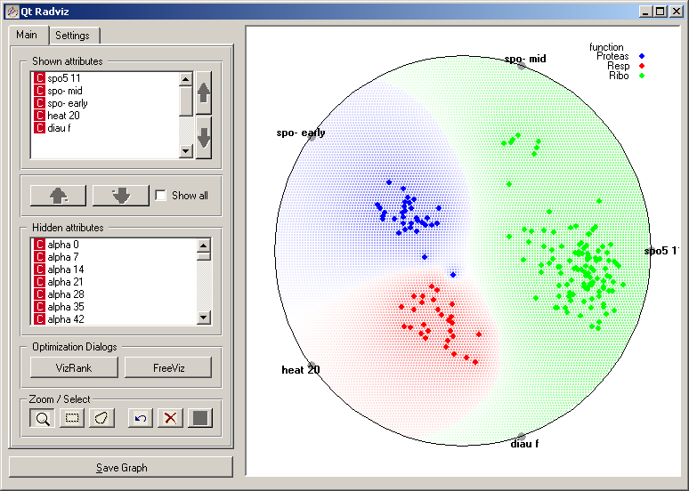
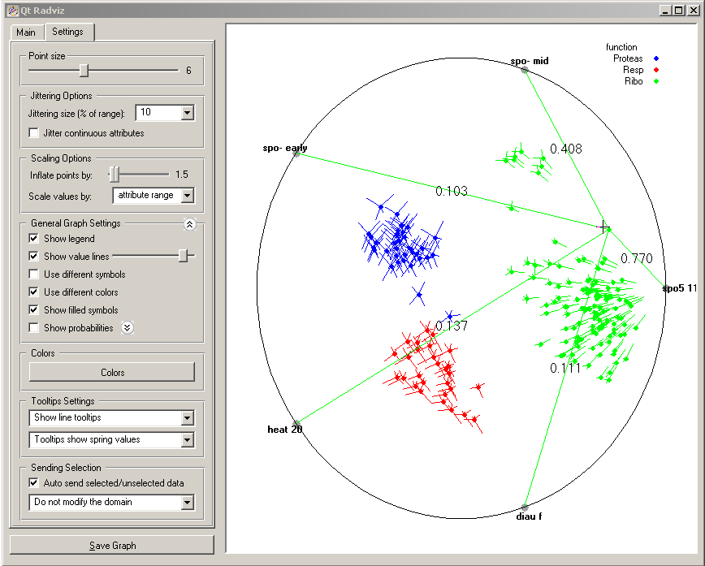

This is documentation for Orange 2.7. For the latest documentation, see Orange 3.
Radviz¶

Radviz vizualization with explorative data analysis and intelligent data visualization enhancements.
Signals¶
- Inputs:
- Examples (ExampleTable)
Input data set.
- Example Subset (ExampleTable)
A subset of data instances from Examples.
- Attribute Selection List
List of attributes to be shown in the visualization.
- Outputs:
- Selected Examples (ExampleTable)
A subset of examples that user has manually selected from the scatterplot.
- Unselected Examples (ExampleTable)
All other examples (examples not included in the user’s selection).
- Attribute Selection List
List of attributes used in the visualization.
Description¶
Radviz ([1]) is a neat non-linear multi-dimensional visualization technique that can display data on three or more attributes in a 2-dimensional projection. The visualized attributes are presented as anchor points equally spaced around the perimeter of a unit circle. Data instances are shown as points inside the circle, with their positions determined by a metaphor from physics: each point is held in place with springs that are attached at the other end to the attribute anchors. The stiffness of each spring is proportional to the value of the corresponding attribute and the point ends up at the position where the spring forces are in equilibrium. Prior to visualization, attribute values are scaled to lie between 0 and 1. Data instances that are close to a set of feature anchors have higher values for these features than for the others.
The snapshot shown below shows a Radviz widget with a visualization of the data set from functional genomics ([2]). In this particular visualization the data instances are colored according to the corresponding class, and the visualization space is colored according to the computed class probability. Notice that the particular visualization very nicely separates the data instances of the different class, making the visualization interesting and potentially informative.
To gain further understanding about the placement of the data points in two-dimensional space, it helps to set on the Show value lines and use Tooltips show spring values. We also switched-off the Show probabilities to see the markings associated with data points better. The resulting display is shown below. From it, it should be clear that high values of “spo5 11” attribute (and for some data instances high values of “spo mid”) is quite characteristic for instance of class Ribo, which at the same time have comparable lower value of other attributes. High values of heat 20 and diau f are characteristic for Resp class. See [3] and [5] for further illustrations of utility of Radviz in analysis of this and similar data set from functional genomics. Other options in the Settings tab are quite standard. The Point size controls the size of the points that mark the data instnace. Jittering Options are especially interesting when displaying data with discrete attributes, where many of the data instances would overlap. Same could happen also with continuous attributes if many data instances use the same value of the attributes. Scaling Options can shrink or blow-up the visualization from its central point. From General Graph Settings, which mainly includes standard point-visualization options, let us bring to your attention Show value lines which we used in the visualization below and which tells the widget to annotate each data point with a set of lines, each corresponding with each of the attributes displayed. The length of these lines are proportional to the attribute values (no line if the value is minimal). A slider accompanying this option sets the scale in which the lines are drawn. Tooltip Settings determine which information is being displayed when the pointer gets over the data instance.
Just like all point-based visualizations, this widget includes tools for intelligent data visualization (VizRank and FreeViz, see [3]) and [4]) and interface for explorative data analysis - selection of data points in visualization. Just like in Scatter Plot widget, intelligent visualization can be used to find a set of attributes that would result in an interesting visualization. For now, this works only with class-labeled data set, where interesting visualizations are those that well separate data instances of different class. Radviz graph above is according to this definition an example of a very good visualization, while the one below - where we show an VizRank’s interface (VizRank button in Optimization dialogs) with a list of 5-attribute visualizations and their scores - is not. See documentation of Scatter Plot widget for further details on VizRank, and for description of explorative analysis functions (selection of data instances and zooming).
References¶
| [1] | Hoffman,P.E. et al. (1997) DNA visual and analytic data mining. In the Proceedings of the IEEE Visualization. Phoenix, AZ, pp. 437-441. |
| [2] | Brown, M. P., W. N. Grundy, et al. (2000). “Knowledge-based analysis of microarray gene expression data by using support vector machines.” Proc Natl Acad Sci U S A 97(1): 262-7. |
| [3] | (1, 2) Leban, G., B. Zupan, et al. (2006). “VizRank: Data Visualization Guided by Machine Learning.” Data Mining and Knowledge Discovery 13(2): 119-136. |
| [4] | Demsar J, Leban G, Zupan B. FreeViz-An intelligent multivariate visualization approach to explorative analysis of biomedical data. J Biomed Inform 40(6):661-71, 2007. |
| [5] | Mramor M, Leban G, Demsar J, Zupan B. Visualization-based cancer microarray data classification analysis. Bioinformatics 23(16): 2147-2154, 2007. |